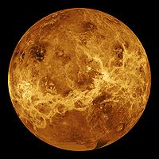

Odległość od Słońca w mln km: 108,2
Okres obiegu wokół Słońca: 224,7 doby
Okres rotacji: 243 doby
Średnica (km): 12104
Masa (Ziemia = 1): 0,815
Objętość (Ziemia = 1): 0,88
Gęstość (g/cm³): 5,24
Prędkość ruchu po orbicie (km/s): 35,0
Liczba znanych księżyców: 0
Wenus jest drugą planetą od Słońca i jest ona otoczona obłokami trujących gazów. Jest bardzo jasna ponieważ jej gęste chmury bardzo dobrze odbijają światło. Maksymalna temperatura na Wenus dochodzi do +482°C. Czas obrotu Wenus wokół osi jest najdłuższy w Układzie Słonecznym i wynosi aż 243 doby - mniej niż na okrążenie Słońca, przez co dzień na Wenus jest dłuższy niż rok. Planeta ta wiruje w przeciwną stroną niż porusza się po swojej orbicie, jest to tzw. "obrót wsteczny". Pierwsza sonda, jaka wylądowała na Wenus, po około godzinie została zniszczona przez jej wysoką temperaturę i ciśnienie. W 1978 r. amerykańska sonda kosmiczna "Pioneer - Venus" stała się sztucznym satelitą tej planety. Dzięki niej odkryto na jej powierzchni rozległe płaskie równiny z kraterami, dolinami oraz pasmami górskimi, a także wulkany.